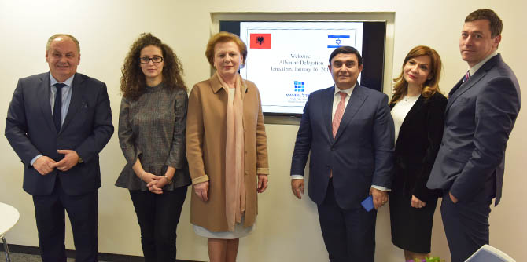

On January 16, 2017, a delegation of Albanian parliament members, including Deputy Speaker
Valentina Leskaj and the Albanian Ambassador to Israel, His Excellency
Bardhyl Canaj, visited the Mandel Graduate Unit and discussed how to develop educational leadership.
The meeting was arranged by
Dan Oryan, Israel’s ambassador to Macedonia and head of the Balkan Section at the Ministry of Foreign Affairs. It was designed to help Albania, which does not yet have a leadership program, advance in this area by exploring the leadership models used by the Mandel Foundation–Israel and learning about its activities. The session was led by the director of the Mandel Graduate Unit,
Dr. Granit Almog-Bareket.
The members of the Albanian delegation were interested in approaches to leadership development in general, and to educational leadership in particular. They explained that Albania has placed great importance on education in the post-Communist era, and that many young Albanians are now studying at some of the best universities in the world, as part of the efforts to develop the country educationally.

Member of Parliament
Anastas Angjeli, a former minister of finance, minister of the economy, and head of the Bank of Albania, was particularly interested in data about Mandel graduates, such as the positions they hold, how many of them work in educational and social fields, and so on.
Dr. Almog-Bareket presented the vision of the Mandel Foundation and of the Mandel Graduate Unit to the honored guests.
Danny Bar Giora, director of the Mandel School for Educational Leadership, gave the members of the delegation a tour that introduced them to the School and its work.
Rakefet Mossek, consultations manager at the Graduate Unit, described the different kinds of programs that the Unit develops with and for its graduates.
The Deputy Speaker of the Albanian Parliament,
Valentina Leskaj, spoke about the challenges facing Albania. She expressed great interest in the educational leadership model of the Mandel Foundation–Israel, and noted that while she understands that only Israelis study at Mandel institutions in Israel, she hopes that a way can be found to enable future collaborations and sharing of knowledge.
Prof. Pierre Kletz, director of the Mandel MBA Program in Social Leadership at Ben-Gurion University of the Negev, described the unique approach of the program, which aims to develop leaders for civil society organizations, and combines core courses in business administration with social leadership studies.
Two Mandel graduates shared their views on the importance of studying at Mandel and its contribution to their careers, as well as the significance of their continued connection with the Mandel Graduate Unit:
Dr. Samira Alian, a graduate of cohort 10 of the Mandel School for Educational Leadership and a lecturer at the Hebrew University of Jerusalem and the David Yellin Academic College of Education; and
Miri Wand, a graduate of cohort 3, the former director of the Educational Institutions Department of the Division for High School Education of the Ministry of Education’s Pedagogic Administration.
{kind=link}